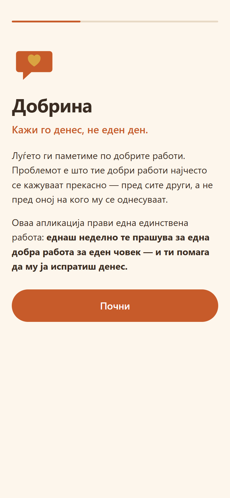
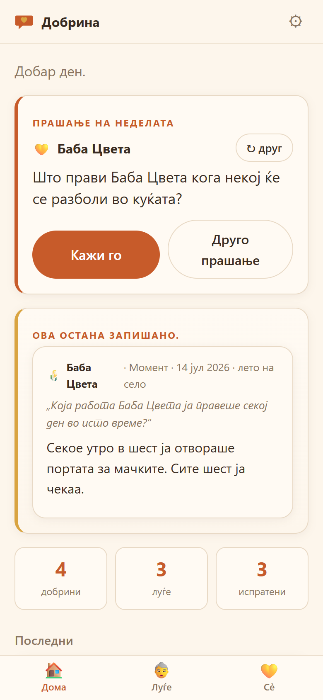
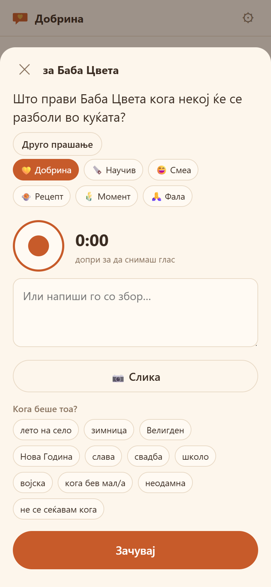
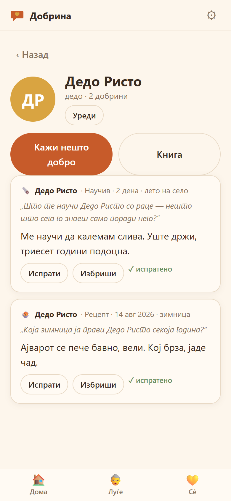

Додека има кому.
Луѓето ги паметиме по добрите работи — а тие најчесто се кажуваат прекасно, пред луѓе што ги слушаат наместо оној на кого се однесуваат. Оваа апликација прави една работа: еднаш неделно те прашува за една добра работа за еден човек, и ти помага да му ја испратиш додека има кому.




Затоа копчето Зачувај ја книгата снима една единствена HTML-датотека со сè внатре — текст, слики и гласови. Се отвора во кој било прелистувач, без интернет, без оваа апликација, и за триесет години. Има и .json резерва што се враќа назад во апликацијата.
Другите апликации го тераат старецот да пишува домашна задача за семејството да добие книга. Оваа го тера внукот да работи, за дедото да добие подарок. Книгата се создава сама — и кога еден ден ќе стане спомен, секој ред во неа веќе бил кажан в лице.